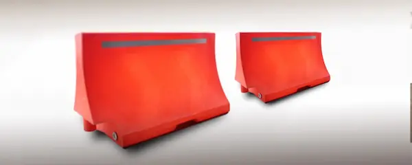
Barreras Plásticas
Nuestras barreras pláticas van en distintos colores y se utilizan para delimitar en obras, eventos deportivos, desastres naturales, conciertos, desfiles, carreras, etc. Son fáciles de apilar, transportar e instalar.
Barrera Plástica 1
Dimensiones: 150 x 50 x 75cm (largo x ancho x altura). Espesor de paredes de 3mm o 4mm.
Color: naranja o amarillo.
Solo incluye una unión por barrera, con o sin tapón de llenado. Cumple con la Norma Oficial Mexicana NOM-086-SCT2-2004.
Barrera Plástica 2
Dimensiones: 153 x 57 x 86cm (largo x ancho x altura). Espesor de paredes de 3mm o 4mm. Relive de chevrones a dos caras.
Color: naranja o amarillo
Unión en el cuerpo de la barrera, con o sin tapón de llenado. Recuadro de colocación para lámpara de destello 9 x 13cm. Cumple con la Norma Oficial Mexicana NOM-086-SCT2-2004.
Barrera Plástica 3
Dimensiones: 174 x 58 x 85cm (largo x ancho x altura). Marcas de Chevrones a dos caras a una profundidad de 2cm.
Color: naranja o amarillo
Espesor de paredes de 3mm o 4mm. Unión en el cuerpo de la barrera, con o sin tapón de llenado, Cumple con la Norma Oficial Mexicana NOM-086-SCT2-2004. Recuadro de colocación para lámpara de destello 9X13cm.
Barrera Plástica 4
Dimensiones: 151 x 59 x 86cm (largo x ancho x altura). Paredes lisas.
Color: naranja o amarillo
Espesor de paredes de 3mm o 4mm. Unión en el cuerpo de la barrera, con o sin tapón de llenado. Cumple con la Norma Oficial Mexicana NOM-086-SCT2-2004.
Conos
Nuestros conos de tráfico de plástico se utilizan para el desvío temporal del tráfico de vehículos, especialmente en caso de haber obras en la carretera en proceso o accidentes de coche. El color rojo brillante combinado con superficies reflectantes especiales los hace visibles a distancia de día o de noche.
Cono de 71cm (Alta Densidad)
Fabricado 100% de Policloruro de Vinilo (PVC) virgen y con aditivo UV. Material Flexible.
Dimensiones: 71 x 35 x 35cm
Cono de 45cm (Alta Densidad)
Fabricado 100% de Policloruro de Vinilo (PVC) virgen y con aditivo UV. Material Flexible. Color Naranja
Dimensiones: 45 x 27.5 x 27.5cm
Cono de 91cm (Alta Densidad)
Fabricado 100% de Policloruro de Vinilo (PVC) virgen y con aditivo UV. Material Flexible. Color naranja
Dimensiones: 91 x 36.5 x 36.5cm
Cono de 71cm (Media Densidad)
Fabricado 100% de Policloruro de Vinilo (PVC) y con aditivo UV. Material Flexible.
Dimensiones: 71 x 35 x 35cm
Cono de 45cm (Media Densidad)
Fabricado 100% de Policloruro de Vinilo (PVC) y con aditivo UV. Material Flexible. Color naranja.
Dimensiones: 45 x 27.5 x 27.5cm
Cono de 91cm (Media Densidad)
Fabricado 100% de Policloruro de Vinilo (PVC) y con aditivo UV. Material Flexible. Color naranja.
Dimensiones: 91 x 36.5 x 36.5cm
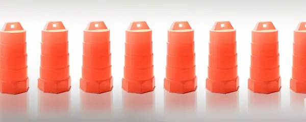
Trafitambos
Ofrecemos trafitambos que se utilizan para delimitar y señalizar las zonas de trabajo y obras en construcción, además de guiar el tránsito hacia el carril indicado o para delimitar zonas o líneas de respeto. Posee gran estabilidad y firmeza en su desempeño diario.
Trafitambo (Material 100% virgen)
Altura: 104cm, Diámetro superior: 39cm, Diámetro inferior: 54cm.
Material: polietileno de media densidad, 100% virgen y con aditivo uv, con orificios para la colocación de lámpara de destello.
Trafitambo (Material Reciclado)
Altura: 103cm. Diámetro superior: 42cm. Diámetro inferior: 52cm.
Material: polietileno de media densidad con aditivo uv 8, con orificios para la colocación de lámpara de destello.
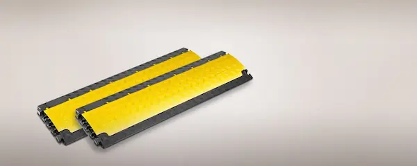
Topes Reductores
Contamos con topes reductores eficaces para reducir la velocidad y aumentar la seguridad de los conductores en vías y estacionamientos.
Safety Rider – V
Con medidas de, 90cm largo x 50cm ancho x 5.7cm alto, color negro con franjas amarillas, incluye tornillería.
Cabecero para Reductor Modelo Safety Rider – V
Con medidas de, 90cm largo x 50cm ancho x 5.7cm alto, color negro con franjas amarillas, hembra y macho, incluye tornillería.
Tope de Hule 100% Reciclado
Prepolimero de poliuretano. Dimensiones: largo 56cm x 15cm de ancho x 10cm de alto, peso 4kg, alta durabilidad.
Tope de Hule 100% Reciclado y Prepolimero de Poliuretano
1.83m de largo x 15cm de ancho x 10cm de alto, peso 15.5kg, alta durabilidad
Tope de Plásticos Con Protección UV
Dimensiones: 50 x 15.5 x 10cm (largo, ancho y alto), incluye reflejante, peso aprox. 1.70kg, carga máxima +/- 30,000kg, varios colores, personalizables con logo de su empresa.
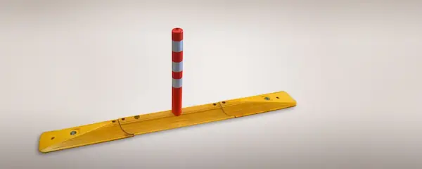
Delimitadores de Carril
Contamos con delimitadores de carril recomendados para separar y delimitar diferentes tipos de carriles, zonas de estacionamiento, zonas especiales, espacios reservados, carril bus etc.
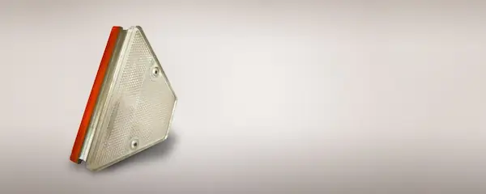
Captafaros
Nuestros captaras que se utilizan como reflejantes de luz por medio de catadióptricos y superficies reflejantes. Se usan también como delimitados de autopistas y vías durante la noche o cuando exista poca visibilidad.
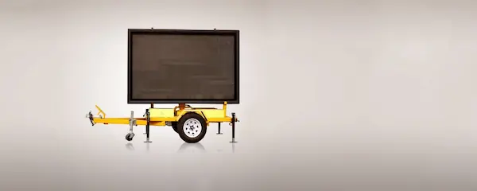
VMS Móviles
Las señales de mensaje variable móviles se utilizan para dar información al ciudadano. Estos pueden ser mensajes informativos, preventivos o promocionales.
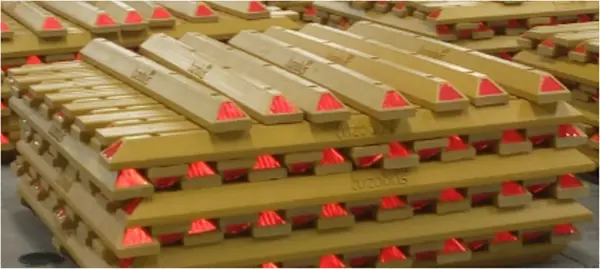
Bolardos
Dimensiones: 10cm de altura, 15cm de base, 1.80m de largo. Fabricada en: Polietileno, con aditivo UV y color integrado, con modificador de impacto. Peso Aproximado: 16.00Kg. Producto amigable con el medio ambiente por sus características del material de fabricación ya que es 100% Reciclado y Reciclable.
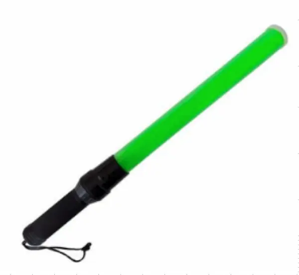
Bastón LED
Plástico resistente. Dimensiones: 53.5cm de largo x 4cm de diámetro. Contiene una fila de leds para una intensa iluminación, botón de encendido y apagado, no incluye baterías
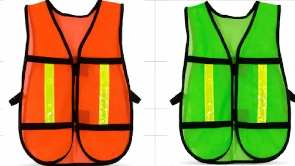
Chaleco de Malla
Dimensiones: 70cm de largo x 45cm de ancho, malla de punto con recubrimiento uv, cuenta con bies de polipropileno de 1" para reforzar el chaleco, correas elásticas de 19mm de ancho, unitalla, cinta reflejante: color limón 11/2" x 30cm
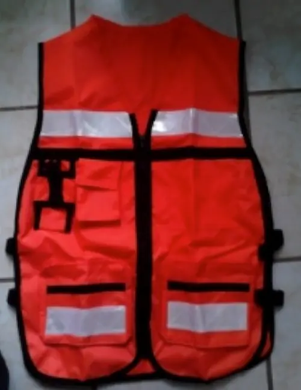
Chaleco Brigadista
Tela 100% algodón de 250gr/m2. Reflejante térmico plástico 100% PVC color plata de 2" de ancho. Bies de polipropileno de 1" de alta resistencia. Tres hebillas de ajuste en cada costado.
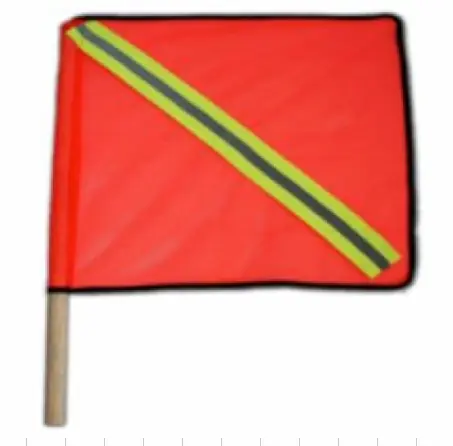
Bandera de Señalización
Dimensiones: 45 x 45cm (lago y ancho). Material: malla de punto color naranja, vástago de madera diámetro 2.3cm x 60cm de largo. Reflejante: color verde limón de 2" con tira gris reflejante en medio de 1cm x 49cm de largo.
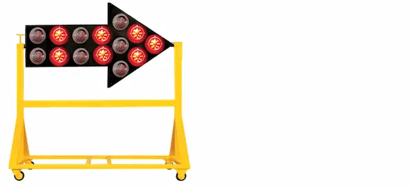
Flecheros
Es un dispositivo que indica la dirección de destino logrando un mejor control y disminución de incidentes viales
Flechero Tipo Flecha
Dimensión: 152cm de largo. Materiales: tablero de lámina calibre 18 con acabado en esmalte negro con 10 plafones y diodos emisores de luz, leds de alta intensidad. Batería recargable, corriente alterna y solar al mismo tiempo, velocidad variable. 2 funciones; con control remoto y eliminador de batería.
Estructura: base ptr de 2 x 2", se puede girar la flecha sin necesidad de desmontar y cambiar el sentido de dirección.
Flechero de 18 Módulos de LED
Dimensiones: 92cm de alto y 153cm de largo. Materiales: lámina calibre 18 con acabado en esmalte negro.
Flechero de 25 módulos de LEDS
Dimensiones: de 91 x 152cm. Materiales: lámina calibre 18 con acabado en esmalte negro. Batería recargable por medio de celda solar, velocidad variable. 8 funciones.
Estructura: soporte ptr de 2 x 2" con ruedas. Ideal para zona de desviación y obras. Energía solar y corriente alterna a mismo tiempo, control remoto y eliminador de batería 4 funciones, leds color ámbar panel solar.